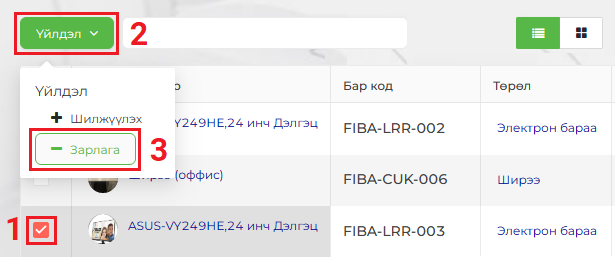
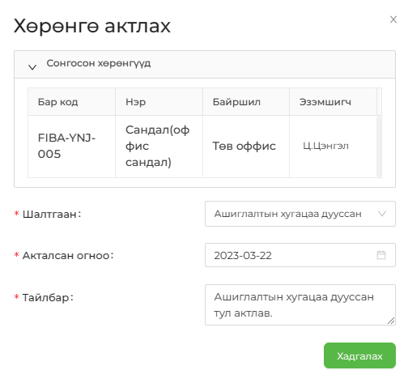

Хөрөнгө зарлагадахын (Актлах) тулд мөн адил Үйлдэл цэсийг идэвхжүүлэх шаардлагатай бөгөөд эхлээд хөрөнгийн жагсаалтаас шилжүүлэх хөрөнгөө сонгож (хөрөнгийн нэрний өмнөх чагтлах нүдийг сонгоно), жагсаалтын зүүн дээд буланд байрлах Үйлдэл товчин дээр дарж, гарч ирэх сонголтоос Зарлагаүйлдлийг сонгоно.


| Санамж:
Хөрөнгө зарлагадах (Актлах) үйлдэл хийсний дараа тухайн хөрөнгийн төлөв өөрчлөгдөж, Актлагдсан хөрөнгө цэс рүү шилжинэ. |